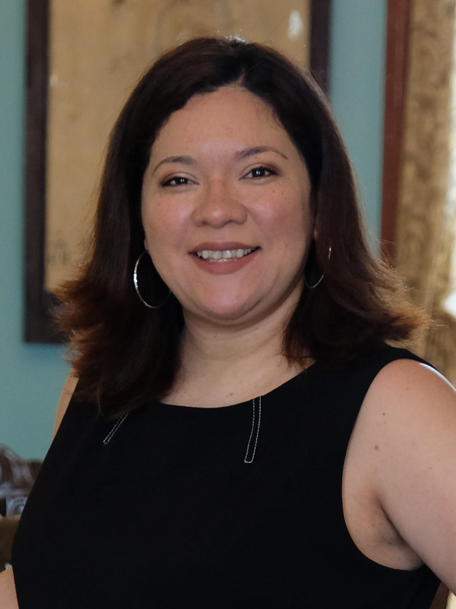
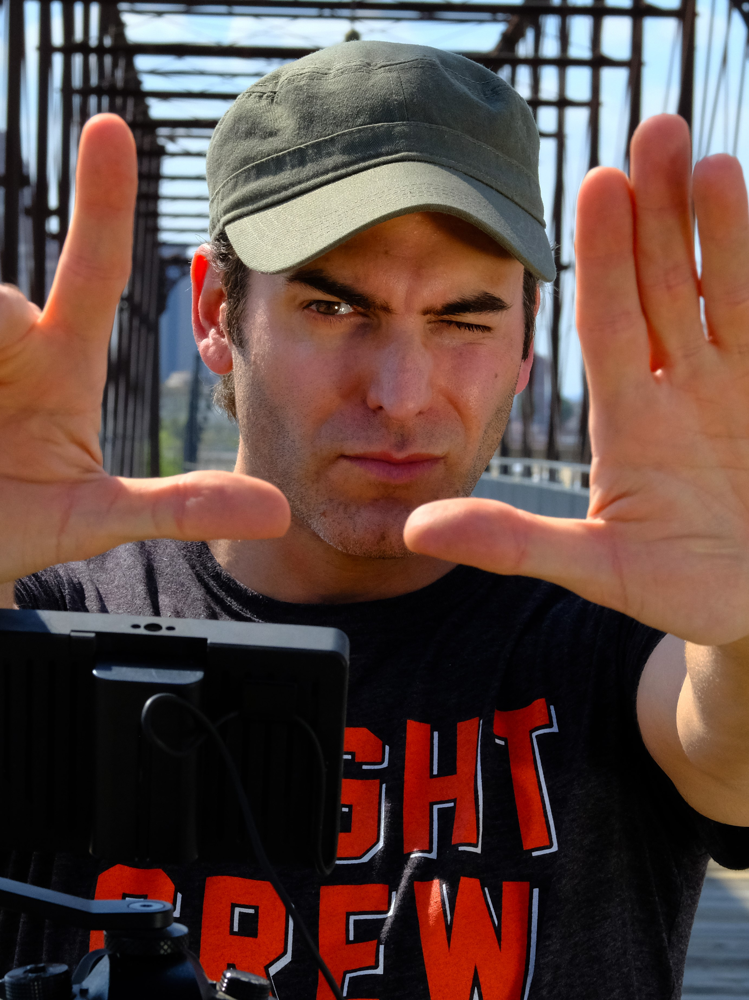

San Antonio, TX. Modern Times. Two homicidal detectives are reviewing cases of similar
homicides. One detective is convince the killer is “Kimo”.
Synopsis
San Antonio, TX. Modern Times. Detective Salazar and Detective Anderson were reviewing evidence of recent murders in the Guadalupe area of San Antonio. Detectives talk to witnesses and suspects. Detective Salazar is gone ho to get “Kimo” who is serial killer who is not afraid of the detectives. Their search for “Kimo” ends with an unexpected turn.
About Homicidal Crimes
Robert Cantu’s Homicidal Crimes is a climatic Noir film with bold characters. Homicide Detective Anderson and Detective Salazar were reviewing evidence of recent homicides in Guadalupe area in San Antonio, TX. Robert demonstrate reenactment of witness’s testimonies which verifies that “Kimo” is the suspect of Hispanic women’s murder. Despite of Captain’s objection, the detectives goes to apprehend “Kimo” at an abandoned house.
Project Specification
GENRE: Film Noir
RUNNING TIME: 13 minutes:42 seconds
COUNTRY OF PRODUCTION: United States
LANGUAGE: English
COLOR: Black and White
SHOT ON: FujiFilm Mirrorless
ASPECT RATIO: 1.85 : 1
RELEASE FORMAT: 4K
FILMING LOCATIONS: East of Downtown, San Antonio, Texas, USA
Confluences Park, San Antonio, Texas, USA
COMPLETION DATE: November 2019
PRODUCTION COMPANY: Corpus Fusion/Austin, Tx, t: 210-251-1448, e: corpusfusion@gmail.com
SOCIAL MEDIA WEBSITES: Facebook: facebook.com/corpusfusion, Twitter: twitter.com/fusioncorpus, Instagram: instagram.com/corpusfusion
DIRECTOR’S STATEMENT
Homicidal Crimes is a fusion of classic Noir with contemporary drama. My favorite genre, crime drama, is due to the flaw characters that roam in the community and the protagonist who is flaw as well is out to stop them.
The fictional story was developed to emphasize the deep racial tension that our community deals with from the criminals as well as from the justice system. The detectives in the film demonstrate the types of evidence that they decipher to identify the killer. Their investigation is artistically film to reenact the crime scenes.
Some may strike the film as offensive but the characters are portraying what detectives and criminals would say. Strong willed characters are there to challenge each other and push back. When strong topics are presented, it must not be whitewash for all audience.
The film is very intense to keep the audience on the edge of their seat. I used the best shooting sites of San Antonio. I worked with a great set of actors that delivered my vision of NeoNoir film that I am proud of.
Robert Cantu
Producer, Writer & Director
02/06/2021
Cast
Scotty Walker as Detective Anderson
Scotty plays Detective Anderson, a homicide detective in San Antonio, TX. He is partner with Detective Salazar who is pursuing a serial killer of Hispanic women in San Antonio. Scotty Walker was born in Honolulu, Hawaii, USA. He is an actor and writer, known for Domestic Hell (2018), Cost Effective (2018) and Spring Breakdown.
Karina Carielo as Detective Salazar
Karina plays Detective Salazar, a homicide detective who is determined to catch the serial killer “Kimo”. Karina is an actress, known for Aisha (2020), St. Thaddeus and the Holy Shroud (2017) and José (2016).
JASON C. CAMPBELL as Jack “Kimo”
Jason play Jack “Kimo”, the serial killer who is being followed by Detective Anderson and Detective Salazar. Jason C Campbell is a best selling author, actor, screen writer, producer, and director. That blossomed into doing short films for film festivals where he has won 2 Best Actor awards, and one of his shorts one best short film. Known in Bloodhound(2017), Camp Bible(2018), The History of San Antonio Lie-Berry(2018), A Heist with Markiplier(2019), and No Man’s Land(2019).
MIKE DELL as Captain
Mike plays as Captain who is unhappy with the investigation of the Detective Anderson and Detective Salazar. Mike Dell is an actor and a professional wrestler. Known in Laser Team(2015), Elite(2017), and Flay(2019).
JACKLEEN RIOS as Internal Affairs
Jackleen plays Internal Affairs who portrays the femme fatale of the Noir film. Jackleen is a professional dancer and founder of Jewel of Art Dance Studios in San Antonio.
TOM MARINO as Chief Of Police
Tom plays Chief of Police who is controlling Captain’s objective. Tom is from Newburgh, New York. He is a business man who operates Marino Property Investments.
GABRIELA GONZALEZ as Josephina
Gabriela plays the witness, Josefina. Gabriela is a model residing in San Antonio, TX.
RAVEN HEART as Secretary
Raven plays secretary of Captain. Raven was born in Montana to a Mexican/Native American Air Force family. Her adult life has seen her in business management, web design, social media marketing, burlesque dancing, as an artist and most passionately, as an actress, filmmaker and formally educated portrait photographer. Known for Dead Live Stream(2020).
SALVADOR SALCEDO as Josephina's Husband
Salvador plays the husband of the witness. Salvador is an actor and cinematographer, known for Toilet Zombie Baby Strikes Back (2021), Darkness (2021) and JD's Grandmaster.
ANGELITA GARCIA RABAGO as Office Bureaucrat
Angelita plays an employee in the office.
ABRAHAM TAKATSUKI as Suspect Perk
Abraham plays a suspect. Abraham is known for his work on Darkness (2021), Eyes of a Roman (2022) and JD's Grandmaster.
ELIZABETH CHAVEZ as Victim

Elizabeth plays kidnapped victim. Elizabeth is from Houston, TX. Art director of movie poster and Corpus Fusion Entertainment’s website.
PRODUCTION TEAM BIOGRAPHIES
ROBERT CANTU: Producer, Writer & Director
Robert Cantu was born in Corpus Christi, TX, and raised in Houston, TX. In 1998, he lived to Los Angeles and he started out as a still photographer on countless student and amateur films. He got more hands-on experience as a boom operator, PA, and working in the grip department. With his knowledge, he produced his first short film “5150”, an inspired film from Stanley Kubrick’s 2001, and it was entered in numerous film festivals. He continued to volunteer on film sets and then in 2001, he produced and directed “The Barista”. In 2003, Robert produced and directed an ego time bomb detective with no moral principles, “Detective Grgich”, a noir film. In 2004, his first real short film “Suspended Homicide” met his professional standard and he directed with greater confidence. He has written my first full-length screenplay “corpus FUSION”. He writes three more full-length screenplays: “Dirty Mary, Crazy Larry”, “Silent Motive” and “JASONLAND”. In 2019, Robert produced and directed a horror short film, “Jason Z”. A Youtube released was on June 13, 2019. By 2020, Robert produced and directed two short Noir films, “The Florentine Gardens” and “Homicidal Crimes”. Both are post-production and are pending release.
JAVIER PRATO: Editor, Colorist & Sound Mixing/Editing

Javier Prato is an editor and cinematographer from Bueno Aires, Argentina. He is known for Ring of Blood (2008), Empty Arms (2007) and Jesus Christ: The Musical (2005).
CHRIST BAKIR: Sound Recorder
Christ is currently resides in San Antonio, TX. Worked in sounds in Florentine Garden(2019) & Homicidal Crime(2021).
FULL CREDITS
CORPUS FUSION ENTERTAINMENT presents
ROBERT CANTU FUSION
“HOMICIDAL CRIMES”